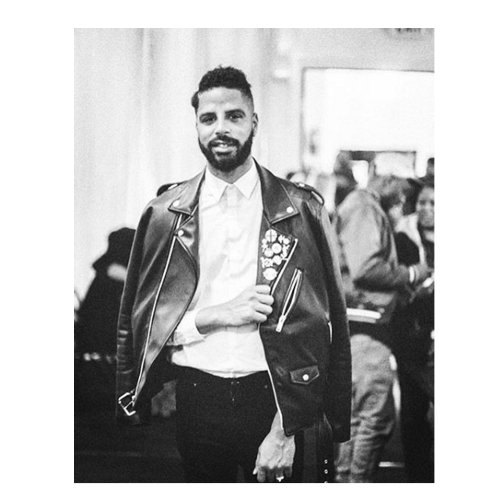

As an illustrator and graphic designer I have a very deep passion and appreciation for the art community. Early in my career
I had the opportunity to participate in many art showcases and have even had solo exhibitions of my own, but
do to certain limitations I could never really organize a showcase specifically how I wanted.
Yahrn
is the culmination of my experience of being an artist, a viewer, a designer, and an entrepreneur. Whether someone
is an art aficionado, fan of a particular artist, or someone who just wants to have a good cup of coffee with
friends, Yahrn is meant to be an atmospheric community meeting spot, where everyone can enjoy the arts over a
cup of coffee, and purchase art that they love from local artists.
For me, Yahrn is more than just a prototype.
This is the foundation of a business that I envision building one day in the not so distant future.
Communicating to the user that the business is an art gallery and coffee shop was top priority. Thematically I used earth
tones and a simple yet tasteful font style to emphasize the coffee aspect and purposly placed the hero image
in the center of the landing page to emphasize the art gallery aspect.
Designing the logo was a really fun challenge. After several concepts I settled on the design that juxtaposed
the paint brush bristles with the coffee mug to give impression of steam emanating from the mug. I found this design to be extremely
delightful.
the food and drink menu icons presented its own unique challenges. Admittedly, the most difficult icon to
create was the dessert icon.

Emerson Ruffin is a really close friend of mine. A brother from another mother, I'm a very big fan of his work and find inspiration
in his process and work ehtic. I'm thankful to be able to call him a friend and to be able to use his beautiful
work for this prototype.